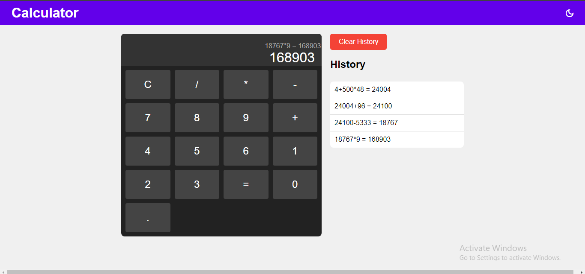
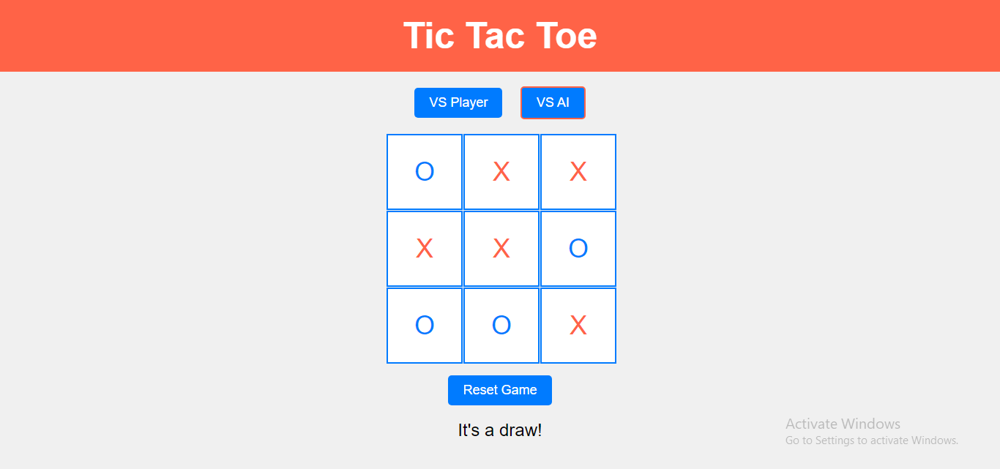

About Me
Hello! I'm Sagar Kulhare, a passionate Web Developer with experience in creating dynamic and responsive websites. I love to learn new technologies and apply them to solve real-world problems.
Skills
- HTML
- CSS
- JavaScript
- React
- Node.js
- Python
Projects
Calculator Web Page
Here, I created a responsive web calculator making use of HTML, CSS and JS. Additionally, I added dark mode, history section with a 'Clear History' button amongst many other improvements to user-interface.
GitHub Repository Link
Tic-Tac-Toe Web Page
In this project, I implemented a interactive and engaging Tic Tac Toe Web Application. It used HTML, CSS and JS to provide a simple yet elegant page where users can select between VS player or VS AI mode, in addition to being able to reset the game using a button.
GitHub Repository Link
Resume
Download My ResumeContact
Email: sagarkulhare755@gmail.com
Phone: (91) 8169488218